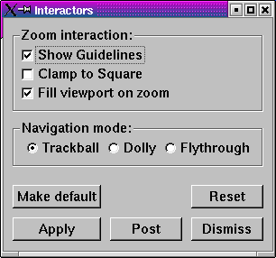

When a vis window is in pick mode, any click with the left mouse button causes VisIt to calculate the value of the plot at the clicked point and place a pick point marker in the vis window to indicate where you clicked. The calculated value is printed to the Output Window and the Pick Window.
|  |
| Figure 7 |